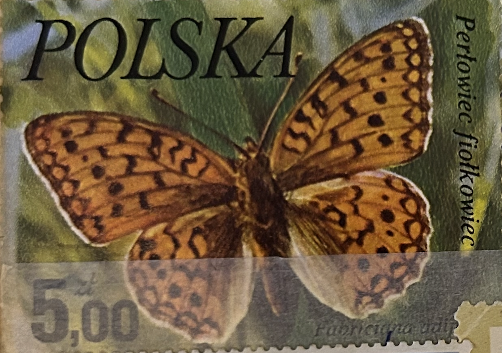
| SOURCE | TITLE| IMAGE MATCH | click to source page |
| eBay | Poland, 1977, Stamp 2349, Butterflies, Fabriciana Adippe, New | eBay |  |
| OLX Poland | Znaczki pocztowe polska Rusałka wierzbowiec Perłowiec fiołkowiec Skoki • OLX.pl | 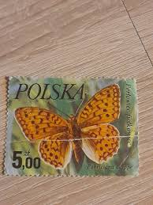 |
| Polska6.pl | Znaczki Polska6.pl - Sklep filatelistyczny | 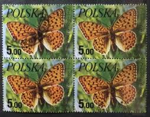 |
| Wikipedia | Dark green fritillary - Wikipedia | 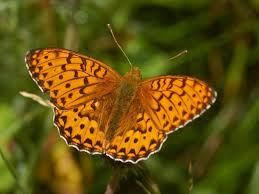 |
| Todocolección | once,mariposas,29/12/1986. - Buy Antique ONCE coupons on todocoleccion | 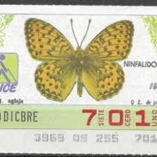 |
| eBay | Nymphalidae, Boloria tritonia amphilochus, male, A1, Russia, RARE L9927 | eBay | 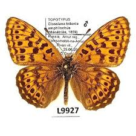 |
| World of Butterflies and Moths | Fabriciana adippe HIGH BROWN FRITILLARY - World of Butterflies and Moths | 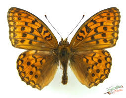 |
| Shutterstock | butterfly Stamp": Over 5,717 Royalty-Free Licensable Stock Photos | Shutterstock | 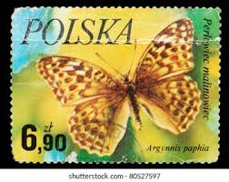 |
| iNaturalist | Mormon Fritillary (Butterflies of Valles Caldera National Preserve) · iNaturalist | 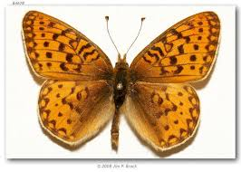 |
| Alamy | A postage stamp printed in Poland shows image of a butterfly - Argynnis paphia, circa 1980 Stock Photo - Alamy |  |
| eBay | Butterflies Original Gum United States Stamps for sale | eBay | 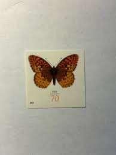 |
| Dreamstime.com | Butterfly editorial stock image. Image of animal, aged - 141764044 | 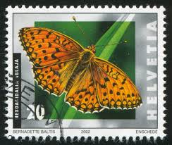 |
| Butterflies and Moths of North America | Butterfly, Moth, and Caterpillar Photographs from California | Butterflies and Moths of North America | 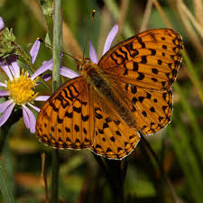 |
| pixels.com | Dark Green Fritillary Butterfly Metal Print by John Keates - John Keates Official Website | 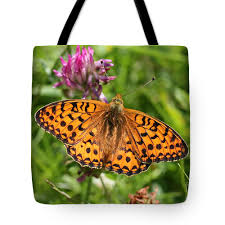 |
| Animalia - Online Animals Encyclopedia | Niobe fritillary - Facts, Diet, Habitat & Pictures on Animalia.bio |  |
| iNaturalist | Zerene Fritillary (Speyeria zerene) · iNaturalist | 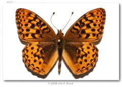 |
| eBay UK | Butterflies British Local Issue Stamps for sale | eBay UK | 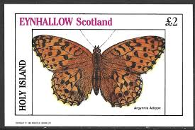 |
| iNaturalist | Niobe fritillary (Crater Lake National Park Pollinator Guide 🐝 🦋) · iNaturalist |  |
| Small Pearl Bordered Fritillary - *Boloria selene - *Wyre Forest - 27/05/22. | 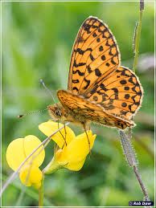 | |
| Brenthis daphne. Russian Far East, Southern Prmorye, Vityaz bay. 20.06.2025 |  | |
| eBay | First Day of Issue Irish First Day Covers for sale | eBay | 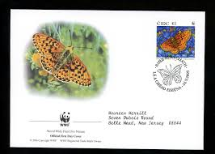 |
| iNaturalist | Eurasian Silver-bordered Fritillary (Boloria selene) · iNaturalist | 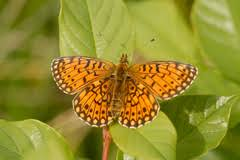 |
| Barcode of Life Data System (BOLD) | BOLD Systems: Taxonomy Browser - Argynnis {genus} | 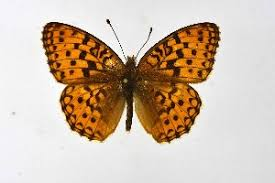 |
| Alamy | A Zerene Fritillary butterfly, Speyeria zerene, on a wildflower in the Oregon Cascade Mountains Stock Photo - Alamy | 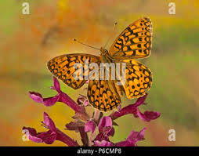 |
| Field Museum | Media | Zoological Collections | 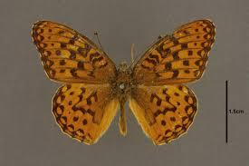 |
| Picture Insect | Small pearl-bordered fritillary (Boloria selene) - Picture Insect | 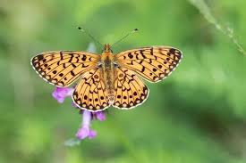 |
| iNaturalist | Genus Argynnis · iNaturalist | 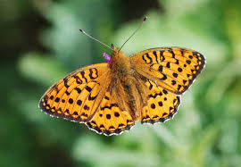 |
| Flickr | Butterfly Color | Flickr | 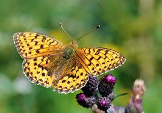 |
| iNaturalist | Mormon Fritillary (Argynnis mormonia) · iNaturalist | 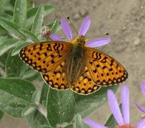 |
| mynaturephotography.com | Argynnis aglaja. Dark Green Fritillary. | Butterflies, Nymphalidae (includes Admirals and Fritillaries) | 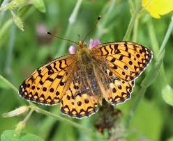 |
| Rule of thumb to tell the difference between a moth and a butterfly. As with everything in life, there are exceptions to this rule. | 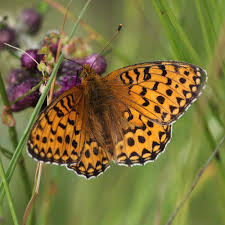 | |
| British Butterfly Aberrations | High Brown Fritillary (Argynnis adippe) butterfly aberrations | 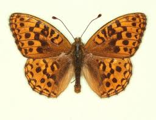 |
| iNaturalist | Lesser Marbled Fritillary (Brenthis ino) · iNaturalist |  |
| notasthecrowsflies.com | Not As The Crow Flies | 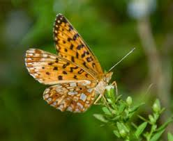 |
| Sciforum | Exploring the impact of temperature on butterfly abundance and diversity (Lepidoptera: Rhopalocera) across selected localities i | 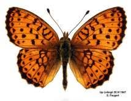 |
| After 20 years, a rare butterfly has returned to Bubwith Acres! 🦋 The small pearl-bordered fritillary depends on carefully managed grassland, including traditional grazing and space for its food plants to grow. | 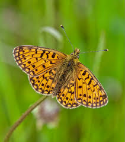 | |
| Wikimedia.org | File:Dark green fritillary (Argynnis aglaja) Sweden.jpg - Wikimedia Commons | 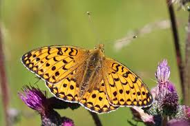 |
| Monaco Nature Encyclopedia | Insects - Monaco Nature Encyclopedia | 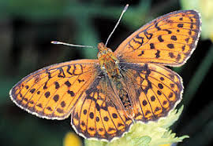 |
| Shutterstock | butterfly Stamp": Over 5,720 Royalty-Free Licensable Stock Photos | Shutterstock | 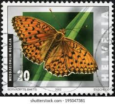 |
| Pyrgus.de | European Lepidoptera and their ecology: Brenthis ino |  |
| Butterfly Conservation | Rush Pasture Factsheet final revised for print | 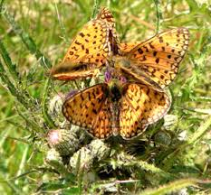 |
| A male Dark Green Fritillary just came to call 🙂 haven't seen one at home for several years..... bad pics phone and left hand 😏 | 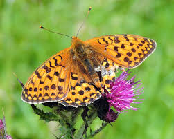 | |
| World of Butterflies and Moths | Dark Green Fritillary Butterfly (A.aglaja) - World of Butterflies and Moths | 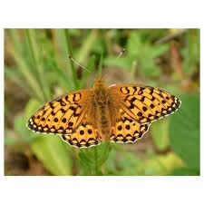 |
| Some more pics from Wisconsin | 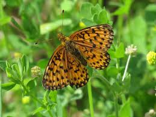 | |
| Still very fresh looking Small Pearl-bordered Fritillaries in Wyre this afternoon. Pearl-bordered do now seem to have pretty well gone over after a very extended flight season, which I hope is good | 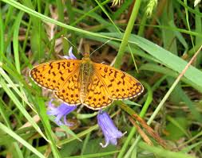 | |
| World of Butterflies and Moths | Brenthis hecate TWIN-SPOT FRITILLARY - World of Butterflies and Moths | 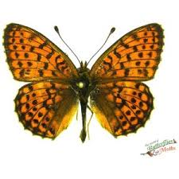 |
| iStock | Butterfly Stock Photo - Download Image Now - Animal Body Part, Animal Wing, Brown - iStock | 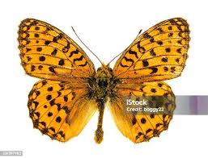 |
| Butterfly Conservation | Forest Haven For Threatened Butterflies | Butterfly Conservation |  |
| iNaturalist | Dark Green Fritillary (Argynnis aglaja) · iNaturalist | 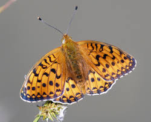 |
| British Butterfly Aberrations | Emperors, Admirals, Vanessids and Fritillaries (Nymphalidae) Butterfly Species | 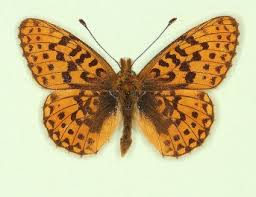 |
| Fox News | Photographer captures remarkable images of endangered butterfly flying off flower | Fox News | 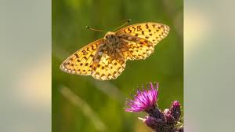 |
| greennature.com | Ohio Butterflies: Pictures and Butterfly Identification Help | 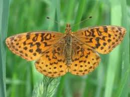 |
| Pearl-bordered Fritillaries amongst the Wood Spurge Always a joy to see these beauties 🧡💛 29th April, 2025 Hampshire | 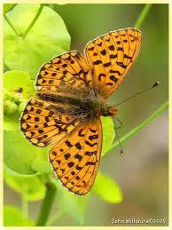 | |
| Butterflies of Oregon | Brushfoots | Butterflies of Oregon | 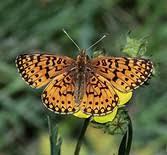 |
| small fritillary butterflyon a thistle | 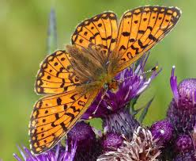 | |
| A Pearl-bordered Fritillary resting on the bracken in the Wyre yesterday as the cloud came in. A couple of minutes later it disappeared up into the trees clearly aware of the oncoming | 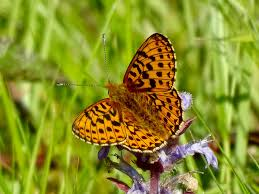 | |
| Wikidata | Boloria selene - Wikidata | 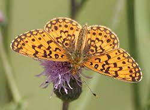 |
| Lepidoptera Mundi | Lepidoptera Mundi: Brenthis ino | |
| Burro Mountain Loop |
_Sweden.jpg){kind=link}